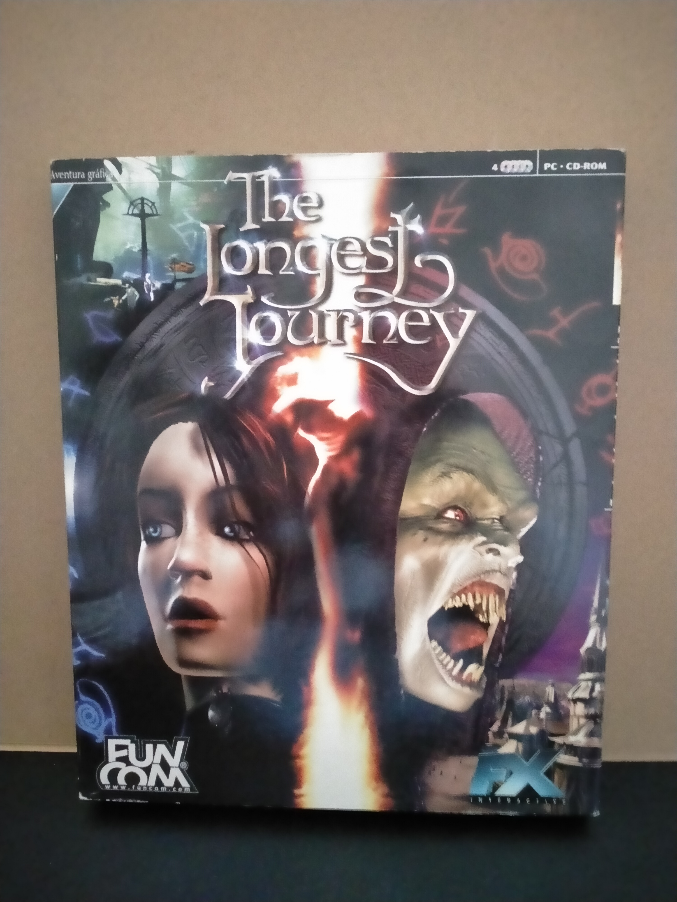

Ficha #000000
The Longest Journey
The Longest Journey es una aclamada aventura gráfica que narra la historia de April Ryan, una joven capaz de viajar entre dos mundos paralelos: uno dominado por la ciencia y otro por la magia. Con un fuerte enfoque narrativo, diálogos extensos y puzzles elaborados, el juego se ha convertido en un clásico moderno del género.
- Formato
- Big Box
- Plataforma
- Win95 Win98
- Género
- Aventura gráfica
- Serie
- Todos Big Box
- Desarrollador
- Funcom
- Distribuidor
- IQ Media Nordic, Dinamic Multimedia (España)
- EAN
- —
Contenido de la edición
- Pendiente de documentación.
Preservación
- Protección
- No determinado
- Formato recomendado
- No aplica
- Jugable en virtualización
- No determinado
Pendiente de documentación